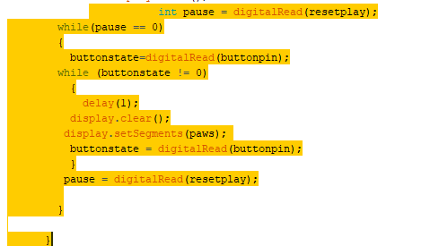
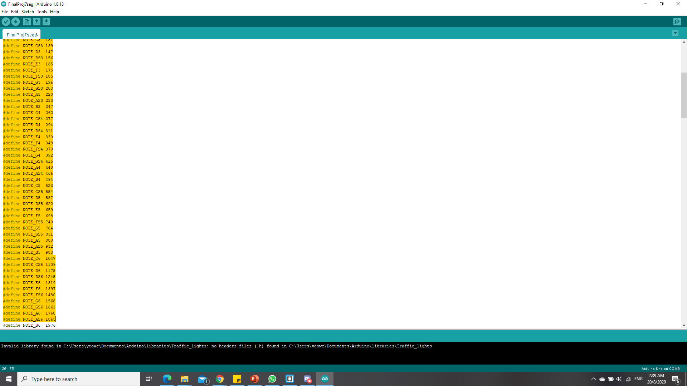
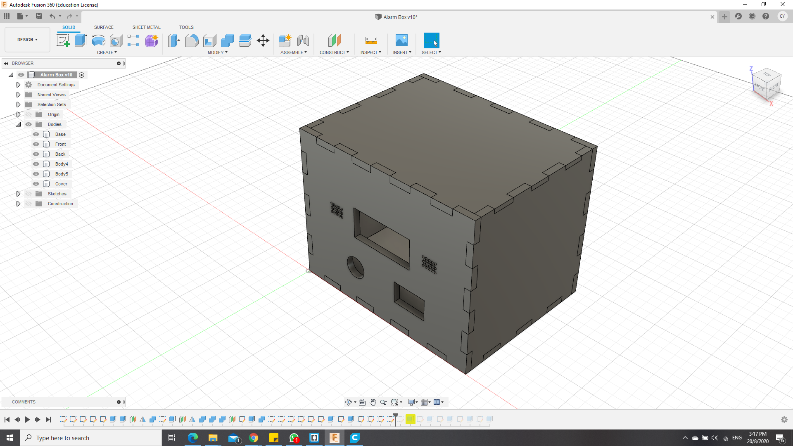
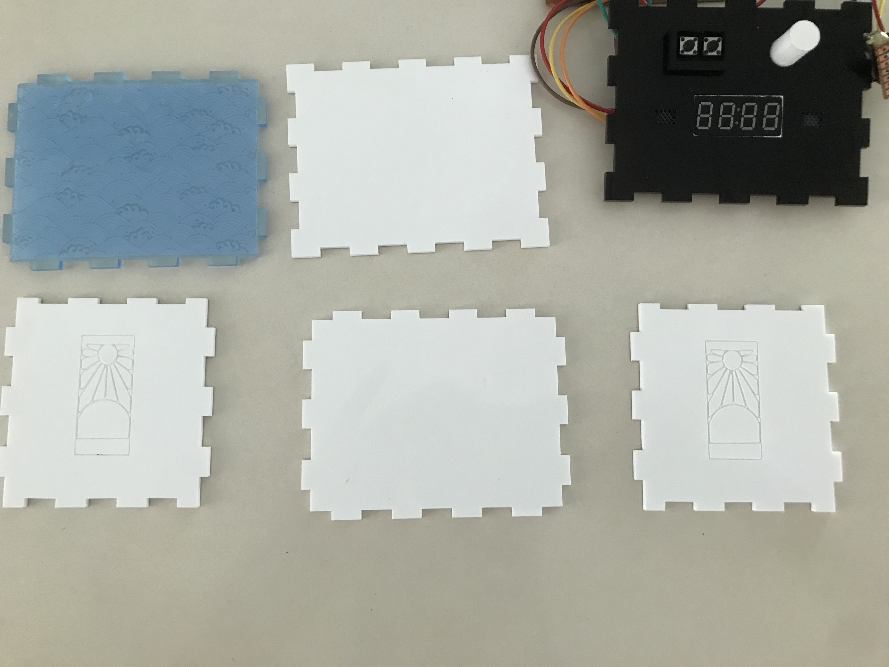
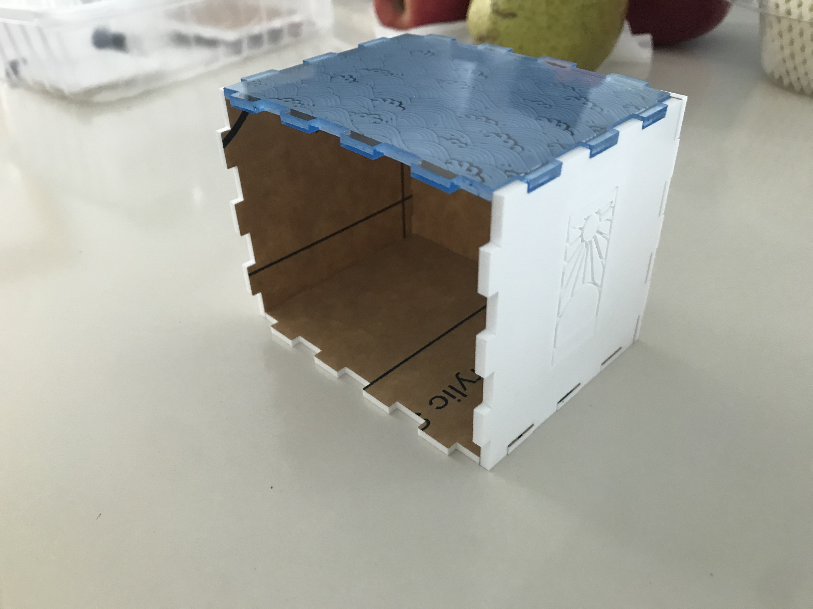
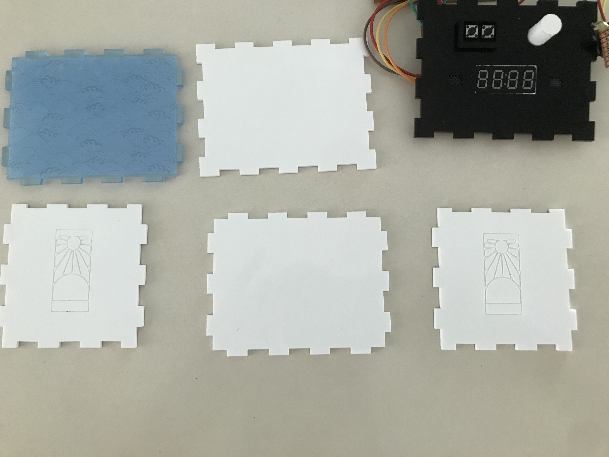
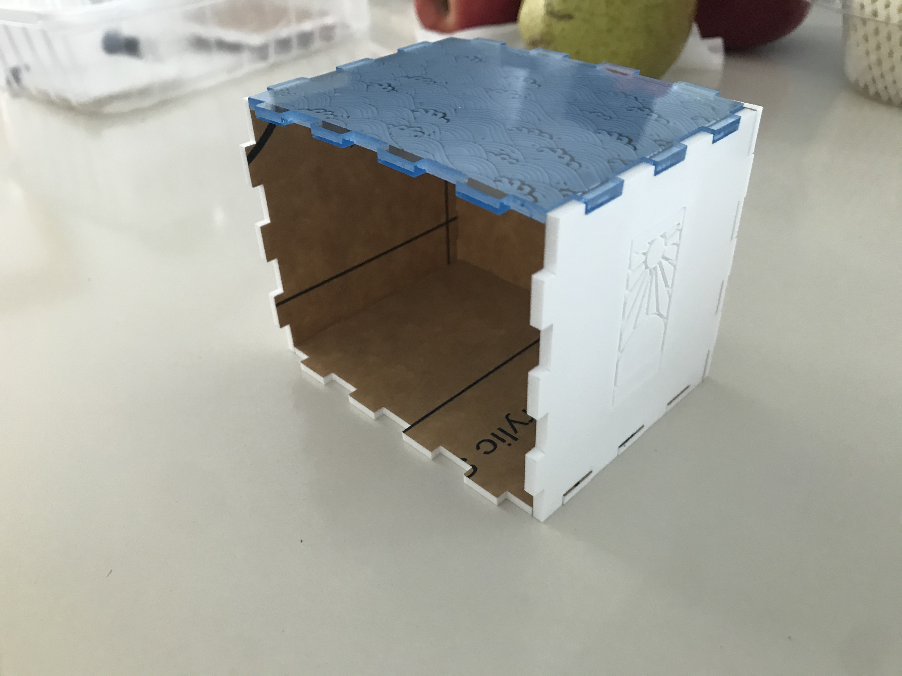
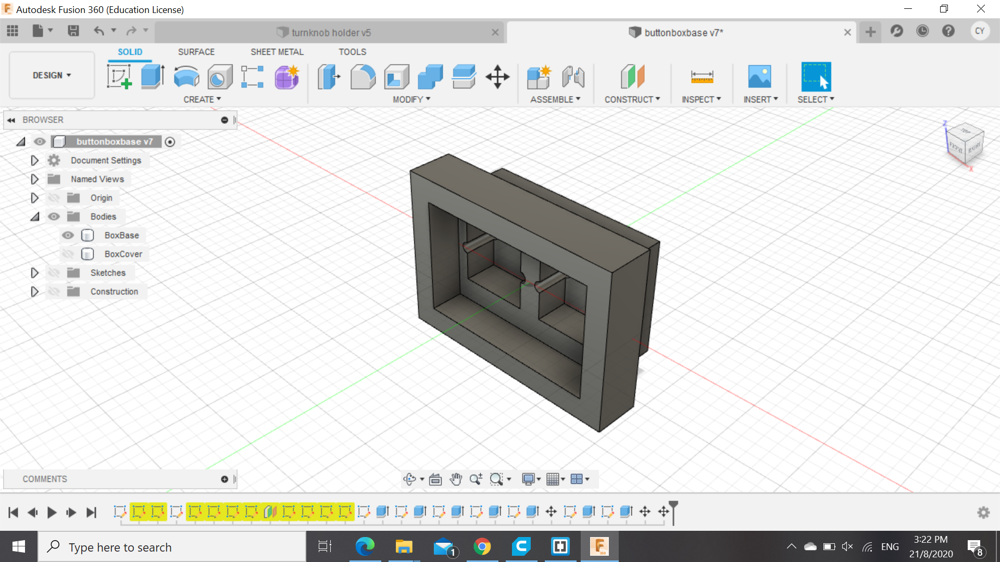

Module Project
Introduction
For my final project, i had decided to make something that i had really intend to use frequently. As i tend to cook alot of instant food, a timer would really nice for me and its also generally small in size. which would feed to the requirements.
First prototype look

Bill of Materials
- Acrylic Material for the box
- 3D printed supports
- Arduino Uno board
- Breadboard small(for testing)
- TM1637 4 digit 7 segmented display
- Wires(both connectors and attachers)
- Variable resistor( turn knob)
- 2 Buttons
- Battery component
How it works?
Like most timers, you are required to first preset a time, ranging from 1 sec to 99min and 55 secs. Using the turnknob to set the numbers for the secs and mins, and a button to confirm the input, the user can set the timer to his desired timing and it will count down every second automatically. If the user requires to pause the timing in between, theres a separate button that can help "pause" the timing and then if he wishes to resume it, they can just press the original "confirm" button. When the timing reaches zero, A buzzer melody would be played for a average of 15 secs and it would reset back to the starting series
There are 3 parts of the project, which consists of laser cutting, 3D printing and embedded programming. So first of all, i had to settle the code and hardware before making a external cover, and it took roughly a total of 8 hours to finish and troubleshoot it.
Arduino Programming
For my Arduino programming, I had first hooked up my potentiometer and TM1637 module into the arduino board, and programme it such that within regular intervals of values given of by the resistor, it would display the numbers from 1-9. With the TM1637 7 segment display, I had to download a different library from the website, Makerguide Tutorials. Afterwards, i had to next install buttons to firstly set the numbers for my timer in terms of minutes and seconds, with the first 2 digits from the right being the seconds and the last 2 being the minutes. From there, the arduino would store these inputs and run them through a formula to calcuate the total number of seconds to run before stopping. The formula itself was not challenging, as firstlyit was to just multiplying the minutes in terms of seconds and adding the values from the seconds column. And afterwards, i had to create another formula from the total time in seconds, to convert back into minutes and seconds. However, there arised an issue as the TM1637 module was not like the LCD display, whereby i can display 2 different values at once without either being cleared before getting erased. Hence, with the help of Mr steven, i had to create another formula that would help show both values as 1 number, while also ensuring that it was still able to show both the total minutes and seconds respectively. Using the formula "display.showNumberDecEx(mins*100 + secs, 0b11100000,true)", which not only helps to accurately show the time but also to add on a semicolon to help differentiate between the two.
After that, it was time to install a pause function to my timer for people who might need it. This was also a little challenging as unlike c++ programming, where there was no loop fo the main function, but i had to think quite differently to solve this problem, and what I did was to firstly create a while loop whereby if the pause button is pressed, it would read fo the state of a separate button(The play button, also the button that sets the value for the timer)and if it wasnt, it would enter another while loop, whereby it would read whether anot it was still in that state, and also displaying a "stop" on the display itself by creating a separate function to control the specific segments to be lighted up when i want my "stop" to be displayed. And when the "play button was pressed, it would first exit the inner loop and read the state of the pause button. As long as it remains untouched, the loop would stop and then it would resume the countdown.
Lastly, to alert the user that the timer was done, i incoparated the use of the buzzer, and made reference to a separate website, Buzzer theme as it was relatively difficult to control the hertz on my own, and the theme also quite popular amongst teenagers. Using define function to declare the notes, the images below shows how it looks like in the programme. In practical sense, when the timer ends, it plays the melody from the buzzer using intervals and afterwards, it would reset back to the setting of the time again, creating a easy endless loop.

Lastly, I had to solder my circuit to a small soldering board so that it could fit into my box that would be mentioned later, as seen in the image below.

Laser cutting
For laser cutting, i had created a simple box with teeth that i had drawn with Autodesk Fusion 360, while saving my sketches of the each of the 6 faces into a dxf file and importing them into the Corel Draw. For the material i used for the box, i used 3mm acrylic, with some clear and others pure white, and imported a few images after enhancing the quality of the image through GIMP and Inkscape to enhance the image. The images used are also below.
Autodesk fusion drawings
.png)
Images used
 After laser cutting , what i had gotten was basically 6 faces of acrylic as shown below, and afterwards what i had gotten after assembly without the front cover.


After laser cutting , what i had gotten was basically 6 faces of acrylic as shown below, and afterwards what i had gotten after assembly without the front cover.


3D printing.
For 3D printing, i had decided to make support parts for some of my modules that required to be locked in position as laser cutting the box only enabled cut through holes to be made and thus had to make some support parts that can help me secure my modules in place. For my button, i had made a little rectangular case to help hold it in from the front as when the button is pressed, the direction that the force is applied to is backwards, hence the button box is made such that it would be placed into the front of the front piece and exit from the back, as shown in the picture below. Although it was a a little bit excessively tight,
.png)
For the potentiometer, i had to create 2 parts, the knob and a holder so that it can hold the knob in place. This was rather challenging as the shape of the potentiometer was not uniform and had some protrusions on the sides, which made making a holder and knob rather difficult and therefore, i had to use the vernier calipers and roughly estimate the dimensions, with a bit of allowance of 0.5mm. and it was able to fit but a loose fit whch can be solved easily with a middle piece in the middle of the knob that slots into the middle of the potentiometer, as it has a slit in the middle. This enables the potentiometer to rotate in the same direction of the twist applied by the user. However, as it requires to be rotated constantly, i had to print a separate holder so as to prevent the resistor form spinning without changing the value of the resistor. As such, the holder had to be able to be glued to the back of the front plate of the box while also not obstructing the other modules in the vicinity, and below shows how the files would look like in Autodesk Fusion.


Final assembly
Assembly was relatively simple, however, 1 of my piece was overbending and therefore, i had required a "hot air gun" that can be found in FabLabSP to help bend it back into shape and thus make it able to fit in nicely to the top.
Link to video from google drive :
Here